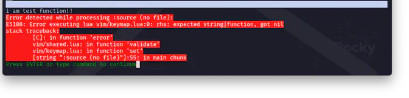

Parameters / Return Values
この節では、もう少しFunctionを深掘りします。
ここで例示しているコードは実用性の無いものだけですが、できれば手元で動かしてみてください。
(そして、終わったら消しておいてください...😅)
通常の function を呼び出す
前節では無名関数を右辺に組み込んでいましたが、これはちゃんと名前のある関数を呼び出す形ですね😆
function testfunc()
print('i am test function')
end
-- (考えるのが面倒で 3 にしてますが...) キーはなんでも構いません。
vim.keymap.set('n', '<Leader>3', testfunc)
いい感じ〜❗
パラメータを渡す
さて、上の項でなんだか急にkeymap.setがスッキリして見えるのは、この辺りの話が関わってきます😌
例えば、これはエラーになります。
パラメータを渡す場合はfunction() ~ endで囲ってあげないといけないんですね🤔
function testparam(str)
print(str)
end
vim.keymap.set('n', '<Leader>4', function() testparam('hello') end)
戻り値がある場合
戻り値があるだけのfunctionは平気みたいです。
function testret()
print 'hello'
return 'good bye'
end
vim.keymap.set('n', '<Leader>5', testret)
ただ、これだと戻り値を全く無視しているので無意味ですよね😮 ...じゃあってことで
vim.keymap.set('n', '<Leader>5', print(testret()))
とかしたくなるんですけど、これはprint()に "パラメータを渡してる" のでエラーになるやつです😅
...結局、function()で囲うところに落ち着くわけです。
vim.keymap.set('n', '<Leader>5', function() print(testret()) end)
function 呼び出し
関数に()があったりなかったりするのはなんでなんだろうなーってなるんですけど、
要は()をつけちゃうとfunction型ではなくてこのfunctionの戻り値の型は何かなー❓って判断をしに行っちゃうんですね😮
今回はvim.keymap.set()を使用しているので、もう一回ヘルプを見返して欲しいんですけど、
これ、一回動かしてみればわかると思うんですが...、
rhs: expected string|function, got nilって言われちゃいます😩
testfunc()は戻り値が無いのでnilですね😰...ごもっとも過ぎて、ぐうの音も出ないやつ。
それに対して、こんなのとかはちゃんと動きます。
-- string を返す
function testcall1()
return ':'
end
-- function を返す
function testcall2()
return testfunc
end
vim.keymap.set('n', '<Leader>7', testcall1())
vim.keymap.set('n', '<Leader>8', testcall2())
keymap.setの{rhs}がtestcall1()はstring、testcall2()はfunctionで戻ってくるのでOKです❗
ちゃんと<leader>7でコマンドモードに入ったり、<Leader>8でお返事されたりしますよね☺️
ファンクションは帰ってくる